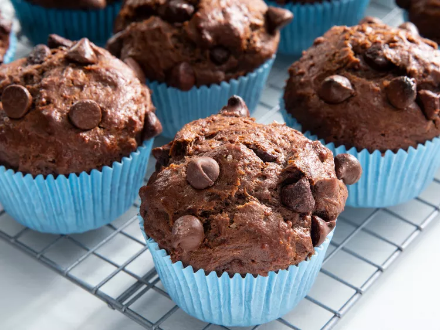

Recipe Information
- Prep Time: 15 minutes
- Cook Time: 20 minutes
- Additional Time: 10 minutes
- Total Time: 45 minutes
- Servings: 12
Nutritional Facts
(per serving)
- 322 Calories
- 15g Fat
- 45g Carbs
- 5g Protein
Ingredients
- 2 cups all-purpose flour
- 1 cup white sugar
- 1 cup semisweet chocolate chips, divided
- ½ cup unsweetened cocoa powder
- 1 teaspoon baking soda
- 1 cup plain yoghurt
- ½ cup milk
- ½ cup vegetable oil
- 1 large egg
- 1 teaspoon vanilla extract
Directions
- Gather ingredients
- Preheat the oven to 400 degrees F (200 degrees C). Line 12 muffin cups with paper muffin liners
- Combine flour, sugar, 3/4 cup chocolate chips, cocoa powder, and baking soda in a large mixing bowl
- Whisk yoghurt, miulk, oil, egg and vanilla in a separate bowl until smooth
- Pour yoghurt mixture into the chocolate mixture and stir until batter is just blended
- Fill prepared mufin cups 3/4 full and sprinke with remaining 1/4 cup chocolate chips
- Bake in the preheated oven until a toothpick inserted in the centre comes out clean, about 20 minutes total.
Cool in the pans for 10 minutes before removing to cool completely on a wire rack
Return to top
Return to main page